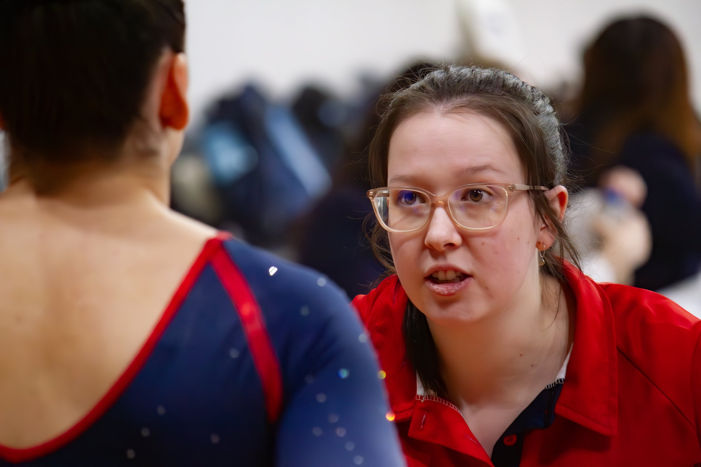
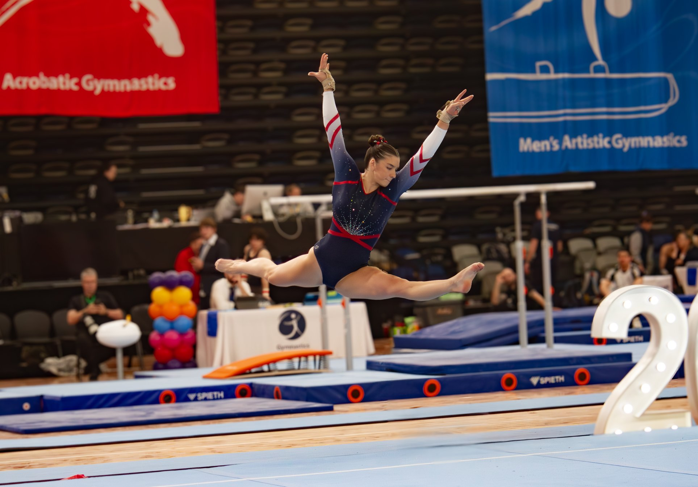

A disclosure before any of the numbers: I know two people on staff at Knox. Caitlin Dempsey, the club's Coaching and Education Manager, and Gabby Dempsey both worked with my daughter at her first club. Caitlin was the one who first saw enough potential in her, back when she was still in Rec classes, to move her into the Development squad, and Gabby coached her for the two years after that, up to a Level 3 Regional Championship title. When both later moved to Knox, we started looking at other clubs ourselves. Knox was seriously in the running, but travel and scheduling ultimately pointed us elsewhere. I've kept a professional relationship with both since, and they've been generous with background when I've needed it for this site. That's the extent of it. Everything from here is the data.
Last time, I profiled Essendon Keilor Gymnastics Academy, a club I'd never set foot in. Knox I know a little better. I've been in the building a few times over the years when my daughter's club has competed at Knox's invitationals, and she had a trial there herself when we were looking for a new club. We'll be back again this weekend for the Junior Invitational.
Built to last
Knox Gymnastics Club was established in 1972, run initially by Knox Council. It has moved between sites over the decades since, and now operates out of Wantirna South. In 1999, management passed from the council to a parent-run Committee of Management, the structure the club still operates under today. Knox describes itself as one of Victoria's largest gymnastics clubs, with around 800 members registered each year across programmes from KinderGym through to elite competitive squads.
A club that size needs a facility to match, and Knox's is worth a mention on its own terms. I've been in the venue a few times over the years, and it's a genuinely spiffy setup, well-lit, well-equipped, and clearly looked after. It also has one of the better cafes I've come across on the Victorian gymnastics circuit; if you're at Knox this weekend and haven't eaten yet, it's worth the queue.
This weekend: the Junior Invitational
Knox's WAG Junior Invitational runs across all three divisions this weekend, covering the full Junior category, Levels 2 through 7. Last year's edition drew 254 athletes from 19 clubs, according to my results database, a serious field for a single-club invitational.
What the numbers say: WAG
Forty-eight WAG athletes appear in my database for Knox, with 427 results across 32 competitions spanning the 2024, 2025, and 2026 seasons. The club's WAG numbers have grown season over season, from 33 distinct athletes in 2024 to 38 in 2025, with 2026's junior levels still to compete as of this weekend. At Level 8 and above, Knox has accumulated 45 medals in my data: 18 gold, 17 silver, and 10 bronze.

Megan Herrmann is the clearest story in the Level 10 data. She sat mid-field in 2024, finishing 13th to 16th across her season, but has climbed steadily since: a first Knox WAG Senior Invite win in 2025 at 44.95, then two wins in 2026, at Knox's own Senior WAG Invitational with 47.55 and at the Senior Judges Invitational with 47.833, the best score I have on record for her. That trajectory, from mid-pack to two wins in the same season, is the kind of form line worth watching heading into next season.
Behind her, Saisha Bowman and Emma Curlis have been moving up the level system together, from Level 5 in 2024 to Level 6 through 2025. Bowman is the more decorated of the two so far, eight podium finishes in my data including wins at the Junior Victorian Championships and Metro East Regional Championships last year, both at 36-plus. Curlis has been close behind at almost every comp the pair have shared, and both are due to open their 2026 seasons at this weekend's Junior Invitational.
What the numbers say: MAG
Twenty MAG athletes appear in my database, with 114 results across 26 competitions over the same three seasons. At Level 8 and above, Knox's MAG programme has 15 medals in my data: 9 gold, 3 silver, and 3 bronze.
Joshua Hart is the standout senior. He spent 2024 and 2025 building a case at Level 9, finishing anywhere from 1st to 5th across nine results, before stepping up to Level 10 this year. His first start at the new level came at a State Trial in February, where he finished 4th. He backed it up at Knox's own MAG Senior Invitational the following month, winning with 66.2, the best score I have on record for him.
At the younger end, Taylor Sweeny is worth flagging. Sweeny competed at Level 7 in 2024, then jumped to Level 8 in 2025 and didn't lose a competition at the new level all year, winning both starts I have on record. That kind of level-up-and-keep-winning pattern doesn't show up often in my data, and it's the strongest junior form line Knox has in the MAG programme right now.